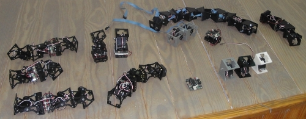

Ya están publicadas las transparencias de la charla sobre Robots modulares que impartí en la Universidad Carlos III de Madrid para estudiantes de altas capacidades de la comunidad de Madrid. La actividad estuvo dividida en dos partes, una primera donde hablé sobre robots modulares e hice demostraciones y una segunda en la que estuvimos jugueteando con los robots y el mando de la wii 😉
Sobre la marcha se nos ocurrió mover una webcam con el Tarri-wheel y el resultado fue muy divertido.
Muchas gracias a Fernando Remiro por contar conmigo para estas jornadas 😉
Las transparencias también están subidas a Scribd y se pueden consultar en línea: